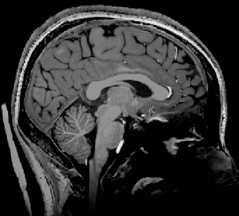
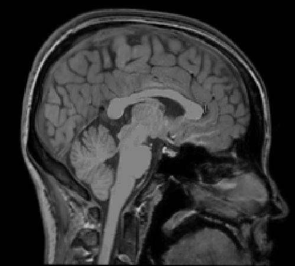
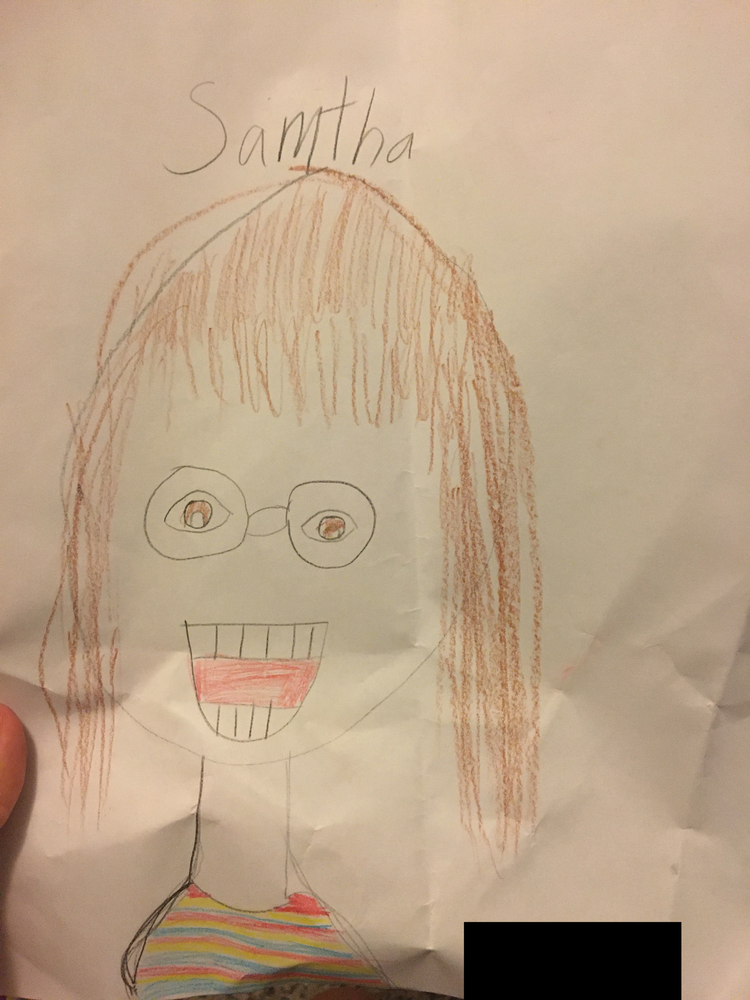

One of 16 stimuli depicting hands and feet in painful and non-painful situations, used in Kim & Yi (2022). To request the original files, please email me. The hands and feet are mine.


A slice of my brain at 7T (left, 0.7 mm isotropic) at CNIR and at 3T (right, 1 mm isotropic). Can you tell the difference?

A portrait drawn by a participant while I was an undergraduate RA at Fischer’s Lab at UIUC. My English name was Samantha then, and I seriously considered switching to “Samtha” because the typo was so lovely.